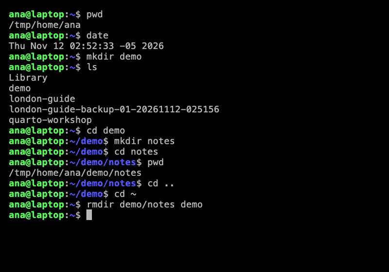

3 Setting Up Your Machine
Quarto, reproducible publishing, coding assistants, Markdown, Python, EPUB, data analysis, k-means clustering
This chapter ends with a number: 42, printed in a web page and a PDF that your own computer built. Getting it there proves that the assistant, Python, Quarto and Typst work together. That is all Parts II and III need, because everything in them happens on your machine: the assistant writes files in your folders, Quarto renders them there, and you open the results in your own browser and word processor. It takes six steps, and each ends with a check you can see, so you always know whether a step worked before you move on.
Do the setup somewhere calm, with a good connection, and allow about an hour. Mac and Linux readers can follow this chapter straight through. Windows readers first install Ubuntu, a version of Linux, inside Windows with WSL, the Windows Subsystem for Linux; Appendix A walks through that one step at a time, and from then on they follow this chapter inside Ubuntu.
- Install Git, a coding assistant, Quarto, uv and
gh, checking each step before the next. - Move around the terminal, and tell the terminal from the assistant when you type.
- Run the setup check and read its report.
- Render a test document to HTML and PDF, and confirm that both say 42.
3.1 Before you start
A stable, fast connection. Almost every step downloads something: on Windows the Ubuntu image (several hundred megabytes), then Quarto, uv (which manages Python for each project) and Python packages, the assistant itself and the example projects with their data. The assistant also sends every request to its model over the internet, so a weak connection shows up as long pauses, timeouts and half-finished installs, which are easy to mistake for your own errors. Use a wired connection or strong Wi-Fi, avoid VPNs where you can, and expect company networks with a proxy to block some downloads.
Two accounts. A free GitHub account, used to publish in Parts II and III, and an account with access to one coding assistant. Claude Code needs a Pro, Max, Team, Enterprise or Console account; Codex a ChatGPT sign-in or an API key (for pay-per-use billing, Section 2.2); Antigravity a Google account (checked 2026-11-03). Sign-up and email verification can take hours, so do them first.
A plan for when a step fails. Errors during setup are normal: each step depends on your system, your network and that week’s versions, so an error does not mean you have failed. It tells you what to fix:
- Look the message up in Appendix D, whose Setup table lists failures seen in practice, with tested fixes.
- If it is not there, ask a web chat in your browser (Claude, ChatGPT and Gemini each have a free plan, checked 2026-11-12), not the assistant: installs can fail before it is working, and sometimes the assistant is what fails. Paste the command you ran and the whole error message, with a sentence saying your system (“Mac”, or “Windows with Ubuntu on WSL”) and which step you are on.
- Try one suggested fix at a time, and read each suggested command before you run it. Never paste passwords, keys or private data.
- If two suggestions fail, ask a person: your group’s help channel, or a colleague.
The six steps, and how you know each one worked:
| Step | Do this | It worked when |
|---|---|---|
| 1 | Get the computer ready (Section 3.2) | git --version prints a version |
| 2 | Move around the terminal (Section 3.3) | after cd ~ the prompt shows ~ |
| 3 | Install a coding assistant (Section 3.4) | it starts, signed in, and answers |
| 4 | Let the assistant install the tools (Section 3.5) | it prints every version |
| 5 | Run the setup check (Section 3.6) | every check reports OK |
| 6 | Do the test run (Section 3.7) | hello.pdf says 42 |
3.2 Step 1: Get the computer ready
The later steps assume two small programs: git, for version control, and curl, for downloading. Open a terminal, the window for typing commands that Step 2 explains (on a Mac: Command-Space, type Terminal, Enter; on Ubuntu: Ctrl+Alt+T), and run the line for your system.
On a Mac, install Apple’s Command Line Tools, which include git:
xcode-select --installA dialog asks to install them: click Install and wait. Doing this deliberately now matters, because otherwise the dialog appears the first time anything uses git, which would be in the middle of Step 4 while the assistant is waiting. “Already installed” is fine.
On Ubuntu or Debian (including Ubuntu on Windows):
sudo apt update && sudo apt install -y curl gitsudo runs a command as the administrator and asks for your Linux password, which stays invisible as you type. On other Linux distributions, install curl and git with your usual package manager. On Windows, follow Appendix A first: it ends with this same command, run inside Ubuntu.
3.3 Step 2: Move around the terminal
The rest of the book happens in a terminal, a window where you type commands instead of clicking. When it is ready for a command it shows a prompt, a line ending in $ (or % on a Mac), which tells you who and where you are (not to be confused with a prompt you give an assistant):
ana@laptop:~/demo$ana is the user, laptop the computer, and ~/demo the current folder: ~ is your home folder, so this is a folder called demo inside it. Eight commands are enough to move around:
| Command | Does |
|---|---|
pwd |
prints the folder you are in (print working directory) |
date |
prints the date and time |
ls |
lists what is in this folder |
mkdir name |
makes a folder |
cd name |
goes into a folder |
cd .. |
goes up one folder |
cd ~ |
goes straight home, from anywhere |
rmdir name |
removes an empty folder (it refuses if anything is inside) |
Figure 3.1 runs them in order. Type them yourself rather than pasting: the hands remember.

/tmp/home/ana; yours is /home/<you> on Linux and Windows, or /Users/<you> on a Mac.
Two keys save most typing mistakes: Tab completes a file or folder name, and the up arrow brings back the previous command. Copying and pasting work differently in a terminal: select the text, then Ctrl+Shift+C copies and Ctrl+Shift+V pastes (Command-C and Command-V on a Mac), because Ctrl+C on its own stops the running program (Table B.1). Later chapters use one compound command often:
mkdir -p london-guide && cd london-guide-p makes mkdir quietly accept a folder that already exists, and && means “and then, if that worked”. Appendix B has more keys and habits.
3.4 Step 3: Install a coding assistant
Pick one assistant and run its installer, the vendor’s own documented command (checked 2026-10-30):
# Claude Code
curl -fsSL https://claude.ai/install.sh | bash
# Codex
curl -fsSL https://chatgpt.com/codex/install.sh | sh
# Antigravity
curl -fsSL https://antigravity.google/cli/install.sh | bashcurl … | bash downloads a small install script and runs it immediately. That is normal for these tools, and it is also exactly why you should only do it with links you trust, such as each vendor’s documented command.
Then open a new terminal tab (Ctrl+Shift+T on Ubuntu, Command-T on a Mac, Ctrl+Shift+D in Windows Terminal). A terminal learns where programs are when it starts, from its PATH, the list of folders it searches for programs, so it cannot find one installed a moment ago, which is the usual cause of command not found straight after an install. On a Mac, a new tab is not enough for Claude Code: its installer puts it in ~/.local/bin, a folder the PATH leaves out, and prints the fix under “Setup notes”. Paste that fix into the terminal, press Enter, then open the new tab (Claude Code, installation troubleshooting, checked 2026-11-06).
Start the assistant in a fresh folder:
mkdir -p ~/setup && cd ~/setup
claude # or: codex, or: agyThe first start walks through three screens. Claude Code’s are shown below as captured on 2026-11-07 (version 2.1.319, in an empty folder, with folder names changed); the screens change between versions, so yours may differ in wording. Before them, Claude Code asks for a text style: press Enter to keep the one selected.
Sign in. Choose the option for your account: the first for a subscription, the second for an Anthropic Console account billed by API use. The assistant opens your browser; where there is none, as in WSL, it prints a link to copy into your browser, and then a code to paste back into the terminal. Codex’s first screen (version 0.167.0, captured the same day) offers “Sign in with ChatGPT”, which works the same way, and “Sign in with Device Code”, a one-time code to use when the browser sign-in fails.
Select login method:
❯ 1. Claude account with subscription · Individual, Team, or Enterprise
2. Anthropic Console account · API usage billing
3. 3rd-party platform · Amazon Bedrock, Microsoft Foundry, Google Vertex AITrust the folder. The pointer starts on “No, exit”, so pressing Enter straight away quits. Press the down arrow first. Quitting by mistake is harmless: type claude again. Codex asks nothing in a plain folder like ~/setup; it asks the same question later, in a project that is a Git repository.
Accessing workspace:
/home/ana/setup
Quick safety check: Is this a project you created or one you trust?
(Like your own code, a well-known open source project, or work from
your team). If not, take a moment to review what's in this folder first.
Claude Code'll be able to read, edit, and execute files here.
❯ No, exit
Yes, I trust this folder
Enter to confirm · Esc to cancelReady. The assistant shows its version, the model and plan of the account you signed in with, and the folder, then waits for a prompt on the line marked ❯. In this capture the logo beside the first lines is left out, and the model and plan are those of the account that captured it; yours shows your own.
Claude Code v2.1.319
Opus 5.5 with xhigh effort
Claude Max
~/setup
────────────────────────────────────────────────────
❯ Try "write a test for <filepath>"
────────────────────────────────────────────────────3.4.1 Two places to type
Now that an assistant is installed, there are two places to type, and mixing them up costs beginners more time than anything else.
ana@laptop:~/setup$ pwd <- the terminal: commands
❯ Which tools are missing? <- the assistant: requests in plain languageThe assistant takes over the terminal tab it runs in: what you type there goes to the assistant, not to the shell, the program behind the terminal that runs your commands, until you leave with /exit. Commands in this book’s You do boxes, such as quarto preview, go in the terminal; prompts in Ask your coding assistant boxes go to the assistant. When the assistant is busy and you need the terminal, open a second tab, as after the install.
Typing in the wrong place is usually harmless: a prompt typed at $ gives command not found, and a command typed into the assistant is read as a request. Look at the line you are on and try again.
The assistant is running and the book says to type gh auth login, the GitHub sign-in of Step 5. Where do you type it?
In a second terminal tab: gh auth login is an interactive sign-in that needs you, and the assistant is using the first tab. Leaving the assistant with /exit also works, but ends the conversation.
3.5 Step 4: Let the assistant install the tools
The remaining tools are Quarto itself, uv, Git and the GitHub command-line tool gh. Each has its own official install method for each system, which is exactly the kind of detail an assistant handles well. Start it again in the setup folder (with codex or agy in place of claude if that is your assistant, here and in the next steps):
mkdir -p ~/setup && cd ~/setup && claude # or: codex, or: agyCheck which of `git`, `curl`, `uv`, `quarto` (1.10 or newer) and the GitHub CLI `gh` are missing on this computer. Install only those, using each tool's official method for my system. Never run `sudo`, or an installer that asks for a password, yourself: print each such command alone in a code block, using full paths, then wait until I say done. Then print every version.installs uv with its official installer · Quarto from its release page (or Homebrew on a Mac) · gh from GitHub’s own package source · prints versions
Before each command it wants to run, the assistant stops and asks, as in Figure 2.4: read the command (the pitfall in Section 2.7 says what to look for), then approve it.
The prompt is written around one limitation: an assistant cannot type your password. So it asks the assistant to hand back any command that needs one, with full paths, because the second tab you paste it into starts in your home folder. Copy the command (Ctrl+Shift+C, or Command-C on a Mac), paste it in a second tab, type your password when sudo asks (it stays invisible), and then type done in the assistant’s tab. On a Mac, the password is your login password.
Quarto has no Ubuntu package in the standard repositories, and Ubuntu’s own gh package is discouraged by GitHub, so a generic apt install would get one tool wrong and the other missing. The prompt’s “each tool’s official method” sends the assistant to the right source for each (Quarto’s download page and GitHub’s install instructions for Linux, checked 2026-10-30).
The assistant has installed uv. In a terminal tab you opened before that, you type uv --version, and the terminal answers command not found. Did the install fail?
Probably not. uv’s installer puts it in ~/.local/bin, which a terminal adds to its PATH only when it starts, so a tab opened earlier cannot find it. Open a new tab and try again; only if it fails there is the install at fault.
3.6 Step 5: Run the setup check
Open a new tab and start the assistant again, so that it sees the newly installed tools:
cd ~/setup && claude # or: codex, or: agyPrint the versions of `quarto` (1.10 or newer), `uv`, `gh` and this assistant, and run `quarto check` (no Jupyter or LaTeX yet is fine: count it as OK). If `git config --global user.name` or `user.email` is unset, ask me for my name and my GitHub email, then set them. Clone https://github.com/project-delphi/quarto-workshop.git to `~/quarto-workshop` (if it exists, `git pull` only when its working tree is clean) and list its `checkpoints/`. Run `gh auth status`. Run every check even if one fails, then report each as OK or not.Three parts of this check deserve a word.
quarto check reports Quarto’s own components, including Pandoc and Typst. Its Python and Jupyter lines may say they are missing, and that is fine: each project in this book gets its own Python environment from uv, so there is nothing to install for Python now. No LaTeX is needed either, because PDFs are made with the Typst engine bundled in Quarto.
A fresh Git has no identity, and git commit refuses to run without one. The prompt makes the assistant ask you for your name and email, so you type your own; check that what it set is yours, not a placeholder.
To clone is to copy a repository, with its history, to your computer: here the workshop’s, into ~/quarto-workshop. It holds the finished examples, the water dataset and the checkpoints: snapshots of each project at the end of each hands-on block, which you will use to catch up if you fall behind.
if gh is not “Logged in”: in a second tab, gh auth login → GitHub.com → HTTPS → Yes → log in with a web browser; copy the one-time code to github.com/login/device; then ask the assistant to check gh again
3.7 Step 6: The test run
The setup check proves the tools are installed. The test run proves they work together: the assistant can write a file and run commands you approve, uv can build a project environment, Quarto can run Python through it, and Typst can write a PDF.
mkdir -p ~/quarto-test && cd ~/quarto-test
claude # or: codex, or: agyRun `uv init --bare` and `uv add ipykernel nbclient nbformat pyyaml`. Create hello.qmd (html and typst formats): a Python cell computing `6 * 7` and an inline-code sentence showing it. Render it with `uv run quarto render hello.qmd`; check hello.html and hello.pdf both say 42.uv init --bare · uv add … · writes hello.qmd · uv run quarto render hello.qmd → hello.html, hello.pdf
/exit, then open the folder: open . (Mac), xdg-open . (Linux) or explorer.exe . (WSL), and open both files
The test run uses things the next chapters explain, YAML settings, a code cell and inline code, on purpose: it is a black-box check that the tools work together, not a lesson. If you are curious, hello.qmd is the file shown in Section 1.2.
Every render prints a line such as [IPKernelApp] WARNING | Kernel is running over TCP without encryption. It is harmless: Quarto talks to the Python kernel, the running Python process that executes the cells, over a local connection on your own computer, and in every dry run the warning came with a successful render and changed nothing in the output.
Summary
- Everything in Parts II and III happens on your own machine, so setup proves that the assistant, Python, Quarto and Typst work together there.
- Each step ends with a check you can see; move on only when it passes.
- Commands go at the terminal’s prompt and requests to the assistant; when the assistant is busy, open a second tab.
- A terminal finds only programs it knew of when it started, so after an install, open a new tab before suspecting the install.
- The assistant cannot type your password: it hands commands that need one back to you, and you read every command before you approve it.
- When a step fails, look in Appendix D, then ask a web chat with the command and the whole error, one fix at a time, and never paste secrets.
The test run was a black box: a file you did not write, settings you have not met, code you have not read. Part II opens it. Starting from an empty folder, you write the London guide for the tourism office one Markdown construct at a time, and by the end of Chapter 4 it is a web page with written rules for the assistant.
Further reading
- Quarto, Get Started and download page (checked 2026-10-30).
- Astral, Installing uv (checked 2026-10-30).
- GitHub, GitHub CLI and installing on Linux (checked 2026-10-30).
- Claude Code setup, Codex CLI and Antigravity CLI (checked 2026-10-30).
- Scott Chacon and Ben Straub, Pro Git, Installing Git (checked 2026-11-06).